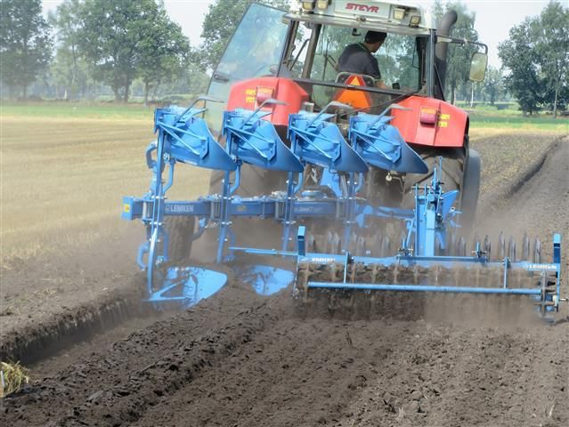
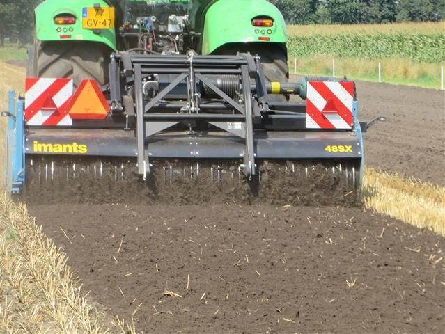
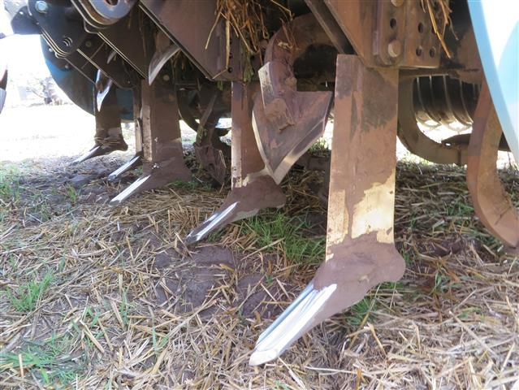
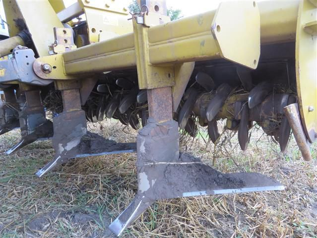
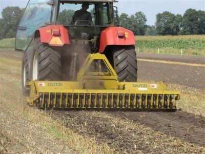
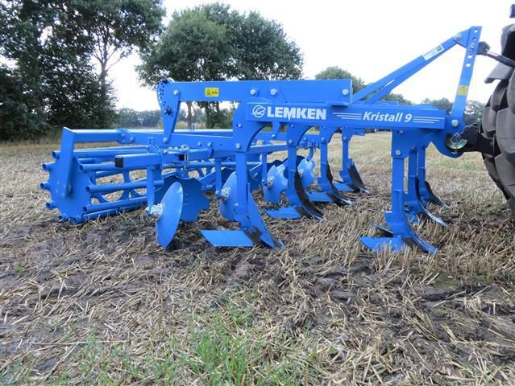
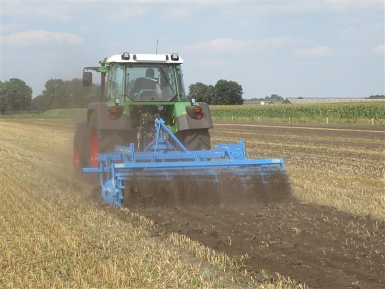
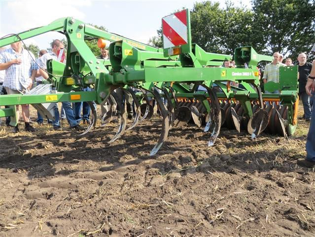
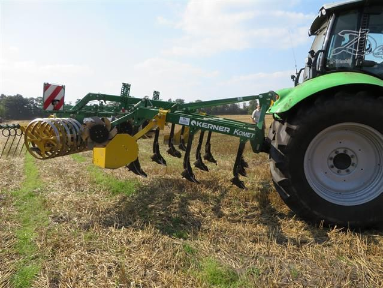
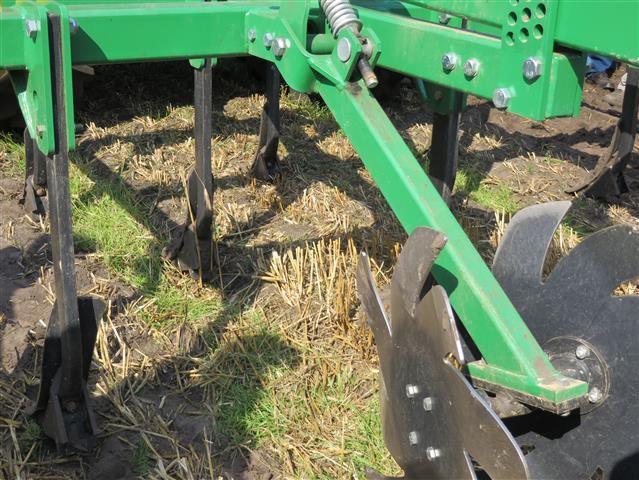

Bodembewerking
Het zijn de machines met hoge aslasten en brede banden die de grootste schade aan bodemkwaliteit toebrengen. Een overzicht van mogelijkheden om deze schade te beperken.
INHOUD
Niet Kerende Grondbewerking
Niet kerende grondbewerking (NKG) is prachtig voor een goede bodemkwaliteit. Op het moment evenwel op heel weing situaties mogelijk. Vooral op extensieve bedrijven zijn er wel mogelijkheden..
Niet Kerende Grondbewerking
Bij Niet Kerende Grondbewerking (NKG) wordt grondbewerking zoveel mogelijk vermeden en wordt ernaar gestreefd de grond zoveel mogelijk bedekt te houden. In Nederland, Belgie en Duitsland zijn er meerdere proeven rond NKG uitgevoerd. Slechts weinig bedrijven zijn ermee gestart. De conclusie op dit moment moet zijn dat Niet Kerende Grondbewerking alleen succesvol is op extensieve bedrijven met weinig rooigewassen op zwaardere grond.
Nieuwe technieken of zeer hoge brandstofkosten kunnen in de toekomst de mogelijkheden van NKG misschien vergroten.
Voordelen van NKG:- Bevordert het bodemleven- Verbetert de bodemstructuur- Mogelijk diepere beworteling van het gewas- Een betere draagkracht en berijdbaarheid van de bodem- Meer waterinfiltratie en beter transport van water in de bodem- Meer capillaire opstijging- Minder verdampingsverlies- Betere vastlegging van C en CO2 in de bodem (organische stof)- Beter ziektewerend vermogen- Een lager brandstofgebruik- Minder arbeid nodig voor grondbewerking- Minder afspoeling van mineralen en gewasbeschermingsmiddelen- Minder wind- en watererosie door permanente bedekking van de bodem.- Vermindert bodemerosie
Nadelen NKG: - Kans op een grotere onkruiddruk- Risico op toename van bepaalde ziekten en plagen. Bekend zijn: slakken, muizen, bonenvlieg en schimmels. Bij schimmels is er ervaring dat fusarium in graan toeneemt. Ook rhizoctonia blijft in de toplaag aanwezig, bijvoorbeeld bij de teelt van suikerbieten na aardappelen is er meer kans is op besmetting, blijkt uit ervaring.
- Een minder geschikte toplaag voor mechanische onkruidbestrijding door het voorkomen van grove organische planten resten.(Padmos, 2011, Balen2012, FAO, 2010).
Aardappelen en NKG-Voorkom grove plantendelen van oogstresten (stro) en groenbemesters met een vaste zode (grassen) bij het poten.-Poot later dan bij ploegen omdat de grond bij NKG langer te nat blijft.-Voorkom sporen van mest uitrijden, maaien groenbemester e.d.-Kies voorafgaand aan de teelt een groenbemester die de grond niet sterk bedekt, zodat verdamping mogelijk is, of een groenbemester die door verdamping de grond uitdroogt.-Of ruggen frezen in het najaar iets is, is nog niet bekend.
Stoppelbewerking op zand bij niet-kerende grondbewerking
We volgen een demonstratie op een veenkoloniale grond in Vredepeel.

De klassieke ploeg. Levert mooi schoon werk op.

Een Imants spitmachine. Deze keert de grond deels. De aangedreven rol aan de achterzijde maakt de grond erg fijn, wat de kans op verstuiven vergroot.

Een tweede Imants spitmachine heeft woelers tussen de spitbladen voor een wat diepere bewerking.

De Dutzi pennenfrees. Dit is de eerste machine die in Nederland voor niet-kerende grondbewerking werd gebruikt. Een combinatie van vleugelscharen die de grond los moeten maken en een frees.

De Dutzi werkt de stoppel niet goed onder.

De Lemkens Kristall 9. Achtereenvolgens woelen, mengen en tenslotte een aandrukrol. De vele ruimte tussen de onderdelen maakt het onderwerken van gewasresten makkelijker

De Lemkens Kristall 9 aan het werk.

De Amazone Cenius 3000-T. Met de smalle beitels kan de grond wat dieper losgemaakt worden. De stoppel wordt evenwel niet goed ondergewerkt en een voorbewerking is nodig. Dit betekent extra rijden en extra verdichten, wat bij niet-kerende grondbewerking een probleem is.

De Kerner Komet.

De Kerner Komet heeft sterverdelers die de grond goed egaliseren.
Conclusie: Voor iedere grond en ieder gewas is weer een andere machine nodig. Hoe dat precies zit is nog niet goed bekend. Er is nog veel te ontdekken. Alle varianten hebben wel als nadeel dat er met zware machines wordt gewerkt zodat bodemverdichting op zal treden. Hier valt ook nog het een en ander te ontwikkelen. Bij de aanwezige akkerbouwers was er niet veel animo om met niet-kerende grondbewerking te starten. Hier kan in de toekomst verandering in optreden als bedrijven goede resultaten blijken te hebben en andere factoren zoals stijgende brandstofprijzen niet-kerende grondbewerking aantrekkelijker maken.
LiteratuurBalen, D. van, 2012 Niet kerende grondbewerking in akkerbouw en vollegrondsgroenteteelt. http://www.biokennis.nl/Dossiers/niet_kerende_grondbewerking in_agv/Pages/default.aspx.
FAO (Food and Agriculture Organisation of the United Nations), (copyright 2010). What is Conservation Agriculture. http://www.fao.org/ag/ca/1a.html.Padmos, T. 2011. Aardappelen bij Niet Kerende Grondbewerking. Stageverslag HAS Den Bosch.
Ondieper ploegen of cultivaterenProbeer zo ondiep mogelijk te ploegen, maar niet altijd kan dat.
Een duurzaam bodembeheer gaat uit van natuurlijke processen en brengt daar beperkt veranderingen in aan of intensiveert datgene wat in de natuur ook al gebeurt. Ploegen past hier eigenlijk niet in. Het bodemleven kent bijvoorbeeld van bovenin de grond naar beneden een geleidelijke verandering die een stabiel ecosysteem vertegenwoordigt. Door te ploegen wordt het gehele bodemorganisme letterlijk en figuurlijk op zijn kop gezet en is er geen sprake van werken in samenhang met de natuur.
Waarom wordt er dan geploegd? Daar zijn meerdere redenen voor. Een te sterk vastgereden grond kan zo losgemaakt worden en wordt daardoor toegankelijk voor wortels. Verder wordt het door ploegen makkelijker om een goed zaaibed te krijgen zonder oogst- en mestresten. Ploegen gebeurt vaak vanwege praktische redenen, zelden om zo een hogere bodemkwaliteit op langere termijn te krijgen.
Om deze laatste reden is er al heel lang geprobeerd een evenwicht tussen voor- en nadelen van ploegen te krijgen door zo ondiep mogelijk te ploegen. Heel veel experimenten in deze richting zijn uitgevoerd en de globale conclusie is misschien wel dat de opbrengsten niet echt hoger worden en de nadelen toch duidelijk naar voren komen. Ondiep ploegen wordt daarom maar heel weinig toegepast. De Rumpsted Ecoploeg die in de jaren 90 werd geïntroduceerd en tussen 10 en 15 cm diepte kon ploegen, belandde vaak achterin de schuur of ergens achter op het erf.
Desondanks verdient het ondiepe ploegen toch aandacht. Er kan sprake zijn van een vicieuze cirkel: door dieper ploegen gaan het organischestofgehalte en de bodemstructuur achteruit, en dan gaan we maar nog dieper ploegen. Door de intensivering van de landbouw wordt vaak onder minder gunstige omstandigheden over de grond gereden en ook worden de machines zwaarder. Hierdoor verdicht de laag onder de bouwvoor en wordt het gebruikelijk om dieper te ploegen. Een ploegdiepte van 30 en soms 35 cm is gebruikelijk. Feit is dat de problematiek per situatie sterk varieert en dat er wel degelijk perspectieven voor ondiep ploegen zijn. Dat blijkt misschien uit het volgende.
Voordelen ondiep ploegen-Een hoger organische stofgehalte met alle voordelen die daarmee samenhangen in de bovenlaag-De bovenlaag is beter bewerkbaar door een betere bodemstructuur-De kwaliteit van het zaaibed verbetert-Op lichte gronden is er minder verslemping-Bij ploegen ontstaat er een mechanisch gevormde structuur. Deze is minder stabiel dan een door het bodemleven gevormde structuur-Door de verhoging van de organische stof in de bovenste laag neemt de stikstofmineralisatie toe.-Bovenin meer vocht en meer bodemleven-Bij het ploegen is er minder versmering-Het probleem van de ploegzool is kleiner-De efficiëntie van de bemesting neemt toe-Ook op wat zwaardere gronden wordt het mogelijk om het ploegen in het najaar te verschuiven naar het voorjaar. Groenbemesters kunnen daardoor in de winter op het veld staan-Het brandstofverbruik is lager-Op wat langere termijn kan de opbrengst hoger worden omdat het zaadbed, de vochthuishouding en het bodemleven verbetert
Nadelen van ondiep ploegen-De onkruiddruk kan toenemen, vooral bij ploegen ondieper dan 20 cm-De kans bestaat dat het vochtgehalte in het voorjaar hoger is waardoor de bodembewerking later kan plaats vinden.-De beworteling neemt bij ondieper ploegen in de bovenste laag toe en in de onderste laag af. Dit kan een negatieve invloed hebben op de beschikbare hoeveelheid vocht en voedingsstoffen.-Oneffenheden in het perceel kunnen moeilijker vlak gemaakt worden door te ploegen.-Het is niet mogelijk om met ondergrondwoelers dieper liggende verdichte lagen los te maken.-Gewasresten worden niet altijd goed ondergewerkt.-De laag onder de bewerkte laag verdicht. Het is mogelijk woelijzers onder de ploeg aan te brengen om dit te voorkomen.-Door het invangen van gewasresten gaat de ploeg stropen.-Bij te natte grond treedt slip op bij bovenover rijden.-De aansluiting van de ploeggangen is soms niet goed. Bij bijvoorbeeld gras en luzerne kan er dan hergroei zijn. Door GPS-besturing kan de aansluiting van ploeggangen verbeterd worden.-Er is niet altijd voldoende losse grond om peen- en aardappelruggen te maken.
Soorten ploegenDe Ecoploeg is de ploeg waar nu het meest ervaring mee is. Deze rijdt over het niet geploegde land en vormt daarom geen ploegzool. Een andere ploeg die bovenover rijdt is de Ovlac Mini. De Kverneland Ecomat rijdt door de voor. Om oogstresten en groenbemesters goed onder te werken, is een ploegdiepte van ca 12 cm nodig. Om ook de wortelonkruiden goed te onderdrukken moet tot ca 20 cm diep worden geploegd. Bij ploegen tot 12 cm diep hoeft de trekker niet in de voor te rijden.
ConclusieOndieper ploegen heeft potentieel grote voordelen, maar ook grote nadelen. Per situatie moet de keuze afgewogen worden.
Vergelijking ondiep ploegen en cultivaterenVoordeel ondiep ploegen-Onkruidzaden, gewasresten en mest kunnen goed ondergewerkt worden.-Er is redelijk veel grond om ruggen voor wortels en aardappels te maken.-In het voorjaar warmt de grond sneller op.
Nadeel cultivateren-Het bodemleven wordt verstoord.-Verticale wortel- en wormgangen worden verstoord wat invloed kan hebben op water- en luchtinfiltratie.
Literatuur
Padmos, T. 2011. Aardappelen bij Niet Kerende Grondbewerking. Stageverslag HAS Den Bosch.Sukkel, W. 2012. Ploegen, hoe diep moet ik gaan?. Ekoland 10, p 12, 13.
Ploegen, spitten en cultivaterenEen hulp om een goede afweging te maken tussen verschillende bodembewerkingsmethoden.
In de praktijk is ploegen de favoriete hoofdgrondbewerking. Spitten en cultivateren zijn in specifieke gevallen de meest voor de hand liggende hoofdgrondbewerking. Vooral cultivateren lijkt voor de bodem gunstiger. Een beter bodemleven en hoger organischestofgehalte zijn het resultaat. In het volgende een overzicht van voor- en nadelen.
Voordelen ploegenGewasresten volledig ondergewerktOnkruidzaden diep wegGoede verkruimeling
Nadelen ploegenBodemleven volledig verstoordOrganische massa te diepVoren die geëgaliseerd moeten worden
Voordelen cultivatorGoede mengingGoede waterdoorlaatbaarheidGelaagdheid blijft intactGeen voren
Nadelen cultivatorGewasresten aan het oppervlakOnkruidzaden in toplaagMeerdere bewerkingen nodig
Voordelen spitmachineGoede mengingCombineren met zaaiGeen vorenWeinig structuurbederfOnder natte omstandigheden toe te passenZware grond kan langer bewerkt worden
Nadelen spitmachineGewasresten aan het oppervlakOnkruidzaden in toplaagLage capaciteit